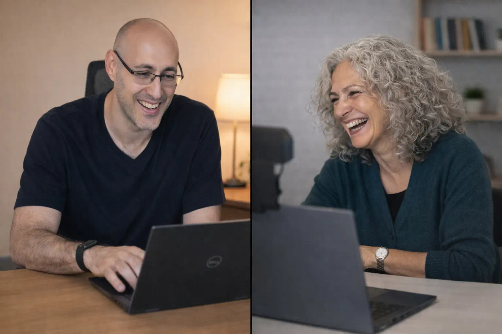

יש מי שירפא
את הפצע הטכנולוגי שלכם
המחשב שלכם הוא לא סתם מכשיר.
זה המקום שבו נמצאים כל החיים שלכם.
תמונות, מסמכים, עבודה, פרנסה.
אני עומר, בוגר יחידת מחשבים של חיל האוויר.
25 שנה בתחום, וכל יום אני עדיין אוהב מה שאני עושה.
אני כאן כדי שתדעו שיש למי לפנות.
באמת." לקוחה, עורכת דין

המחשב לא עובד.
ואתם מרגישים שלקחו לכם את הידיים.
המחשבה "ומה אם נמחק משהו" מוכרת לכם מדי יום.
הפחד שמשהו ייעלם שמור שם בפנים, כל הזמן.
טכנאים שמדברים טכנולוגית ומשאירים אתכם עם יותר שאלות מתשובות.
אבל זה יותר חמור, כי כל החיים במחשב."
הדרכות אינטראקטיביות קצרות
לומדים דרך עשייה, לא צפייה.
בכל הדרכה אתם עושים בעצמכם, צעד אחרי צעד.
חוויה שאפשר ליישם מיד.
הדרכה שתלמד אתכם להשתמש בכלי בינה מלאכותית.
בצורה פשוטה, בקצב שלכם.
כל מה שצריך כדי למצוא כל קובץ תוך שניות.
ולעולם לא לאבד מסמך חשוב שוב.
איך לגלוש בלי פחד, לנהל סיסמאות נכון.
ולזהות הונאות לפני שהן פוגעות בכם.
כל כלי גוגל שאתם משתמשים בו, במקום אחד.
בקצב שלכם, עם תרגול מעשי.
מגיל 16 אני מתקן מחשבים.
אני בן 40 מראשון לציון. התחלתי להתעסק במחשבים עוד כשזה היה נחלת החנונים בלבד. בוגר בית הספר למקצועות המחשב בצה"ל, ושירתי ביחידת המחשבים של חיל האוויר.
מעל שני עשורים אני מלמד ומתקן מחשבים. הקמתי את קבוצת הפייסבוק "תשאל טכנאי מחשבים", אחת הגדולות בישראל בתחום.
הסוד שלי פשוט.
סבלנות אינסופית, בלי שיפוטיות, בשפה שלכם.
לילדים שלהם אין סבלנות להסביר, אז מישהו צריך.
לכל ההדרכות שלי
תוך שניות הוא קלט בעיה שלא שמתי לב אליה בכלל."
המחשב לא נדלק, ושום דבר לא קורה.
ביחד נהפוך לחוקרי תקלות, נכיר את הרכיבים מבפנים, ונבדוק מחשב אמיתי על השולחן.
בסוף תדעו לא רק לזהות את החשוד, אלא גם להבין למה.
בשפה שלהם

בגלל זה אני מאוד סומכת עליך, ואלוהים שלח אותך."
לא גרם לי להרגיש טיפשה אפילו פעם אחת."
פניתי עם מספר בעיות במחשב, טיפל בכל הנושאים במהירות, מקצועיות ויעילות."
מסודר, מאורגן, ונותן טיפים פרקטיים שלא הכרתי."
טיפים שאני כותב בשבילכם
דברים שלמדתי מ-25 שנה בשטח.
כתובים בפשטות, בלי מילים מסובכות.
אם המחשב שלכם איטי, מבולגן או מלא בתוספות שלא התקנתם, אחד מהדברים האלה הוא הסיבה.
שלושה שימושים פשוטים שאנשים בכל גיל כבר מיישמים, וגם אתם יכולים להתחיל עוד היום.
טיפ אחד קטן שיכול לחסוך לכם הרבה כאב ראש ולהגן על כל המידע שלכם.